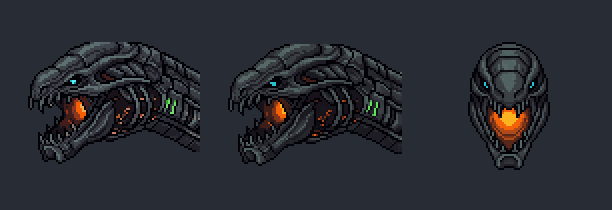
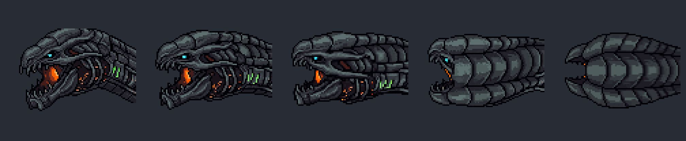
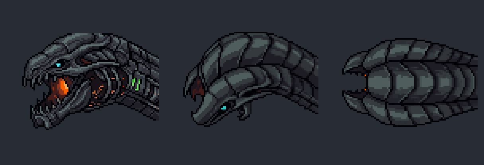
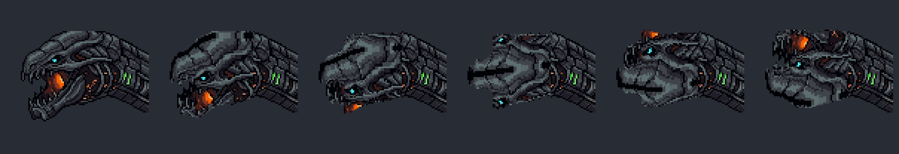
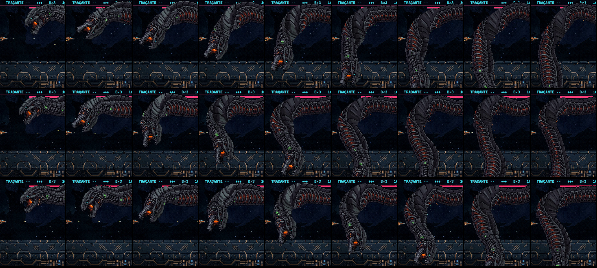

A enguia colossal: a cabeça girando
07/11/2026 · START plans/2026-11-07-enguia-geracoes-START.md, etapa 1 (as vistas da cabeça E3) e a investigação da etapa 2 (as costas esticando) · fora do jogo, nada instalado ainda.
O que preciso de você
- Qual caminho de cabeça instalo na maquete: A, A+C′, B ou D. Eu recomendo o B.
- As costas: posso voltar a chegada para a curva da rodada 4, mantendo a desaceleração (a
r4lenta)?
Depois da sua escolha, instalo as duas coisas na maquete e mando o vídeo da luta inteira, com o zoom das viradas. As etapas 1 e 2 fecham com o commit e o push.
1 · As vistas da cabeça em movimento
Cada painel faz a virada como na luta: a cabeça vai de "olhando para a esquerda", passa por baixo e termina "olhando para a direita", em 0,64 s (o tempo de hoje na chegada). A troca de vista acompanha o ângulo do rolar. Primeiro na velocidade real (duas vezes), depois 4× mais lenta. Só o crânio gira: na luta, o pescoço é a pele do corpo.
2 · Os quatro caminhos
Hoje a cabeça troca de lado num quadro (o espelho seco). Quando o corpo rola, ele mostra o dorso para a câmera no meio da virada. Então a cabeça precisa de vistas intermediárias: perfil → ¾ → (dorso ou frente) → perfil do outro lado. Da metade em diante uso o espelho das vistas da primeira metade, porque a cabeça é simétrica.
B · as 8 direções do PixelLab com a cabeça deitada recomendo

original · ¾ de frente · de frente (×4)
- A cabeça vira para a câmera, não pelo dorso: no meio da virada ela encara você, de boca acesa, e chega ao perfil do outro lado.
- O traço mais fiel dos quatro: as placas, as brasas, o olho ciano e a boca laranja ficaram iguais à E3. Não alisou, ao contrário do que a memória avisava para as rotações.
- A vista de frente também serve ao Eco (a cabeça encarando a nave no cuspe).
- A diferença: o corpo mostra o dorso no meio do rolar, e a cabeça mostra a cara. Lê como a serpente girando a cabeça para olhar o jogador enquanto o corpo vira. Se você quiser a cabeça presa ao rolar do corpo, o caminho é o A+C′.
A+C′ · a ponte animada + o dorso do A

original · 3 quadros da ponte v3 (das duas pontas fixas: a original → o dorso do A) · o dorso (×4)
- A cabeça rola junto com o corpo e mostra o dorso no meio da virada, o mesmo que o corpo mostra.
- Os primeiros ~35° saem no traço da E3: as placas do dorso aparecem aos poucos.
- O dorso alisa: placas grandes e chapadas, mais "cartum". O olho e as brasas somem. No movimento, o meio da virada lê como uma casca de placas.
A · as 8 direções do PixelLab com a cabeça de pé

original · ¾ por cima · dorso (×4)
- O truque: com a cabeça de pé (focinho para cima), o giro das 8 direções em volta do eixo vertical vira exatamente o rolar do crânio sobre o próprio eixo. Depois deito as vistas de volta.
- O defeito: o mesmo dorso liso do A+C′. O ¾ salta direto da E3 para um desenho mais simples, e no movimento a troca pula.
D · o rolar da própria arte aprovada (sem PixelLab)

0° · 30° · 60° · 90° (o dorso) · 120° · 150° (×4)
- O mesmo método do corpo: cada coluna do crânio vira um cilindro e rola, lido pelo comprimento de arco. Os pixels são os da E3.
- O dorso é inventado pela conta: o lado de cima tem poucas linhas na arte, e o vão da boca vira um risco escuro. Nos ¾ (30° e 60°) a boca e o olho se embaralham; no movimento, borra.
Descartados antes da folha fora
- C · animação v3 direto da original ("rola sobre o próprio eixo"): quase não sai do lugar, a cabeça só inclina um pouco (o v3 tende a ficar perto de parado).
- A ponte até o dorso do D: vira metamorfose em vez de giro (a boca fecha e aparecem quatro olhos no meio).

C direto

Ponte até o D: os quatro olhos

B, as 8 direções cruas (as de trás não entram)
3 · As costas esticando no rolar
A causa
Na rodada 4, o rolar inteiro acontecia dentro de uma curva fechada. Nos 80 px de corpo em que ela rola, o rumo virava ~87°, então o dorso de frente ficava curto e dobrado.
Na rodada 5, a curva da chegada abriu (para a cabeça virar menos seca), e a curva e a descida perderam a onda do nado. Hoje, nos mesmos 80 px, o rumo vira só ~46°. O meio do rolar cai num trecho quase reto, e o dorso de frente vira a faixa lisa que desce a coluna: as "costas esticadas".
A correção (chegada=r4lenta): a curva da rodada 4 (com a onda) e a desaceleração de hoje (160 → 100 → 160 px/s), num trecho só. O rumo volta a virar 87° no rolar, e a cabeça leva um pouco mais para virar que na rodada 4. Com as vistas novas, a curva aberta deixa de ser necessária para a cabeça não estalar.

Cada linha começa quando a cabeça começa a rolar, um quadro a cada 0,25 s. 1ª linha: hoje (a faixa lisa desce a coluna) · 2ª: a rodada 4 · 3ª: a r4lenta (a proposta).
Hoje
Rodada 4
r4lenta (proposta)
Os vídeos ainda têm a cabeça antiga, a do espelho seco: aqui só importa o corpo.
Como refazer
node scripts/_serpente/_enguia-cabeca-8dir.mjs prepara | rola | previa(as entradas, o caminho D, a prévia e as tiras)- PixelLab: A = objeto
aaa23a94, B = objeto59eae766(8 direções, vista lateral, 15 gerações cada); as pontes v3 porscripts/_f4/_pl.mjs anim(2 gerações cada). - A maquete com a chegada nova:
node scripts/_serpente/_enguia-maquete.mjs desvia <dir> corpo=pele chegada=r4lenta